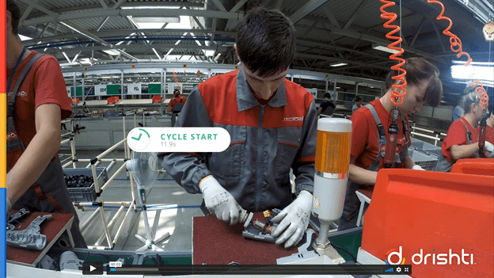
From Design Debt
to Design System
A UX overhaul for an enterprise AI SaaS platform in manufacturing
Existing State
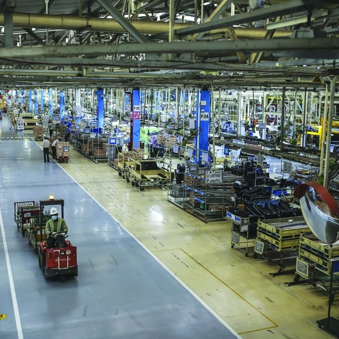
Toyota's assembly line — a benchmark for lean manufacturing. Customers like Toyota, Electrolux, and DENSO shared one need: turning tacit floor knowledge into measurable data.
Assembly lines run on timed, pre-defined actions. For decades, the only way to measure them was a stopwatch. Drishti Technologies replaced the clipboard with ML.
Drishti used machine learning to analyse video streams from assembly lines — detecting Standard Work compliance, measuring cycle times, and identifying anomalies in real time across every level of the manufacturing hierarchy.
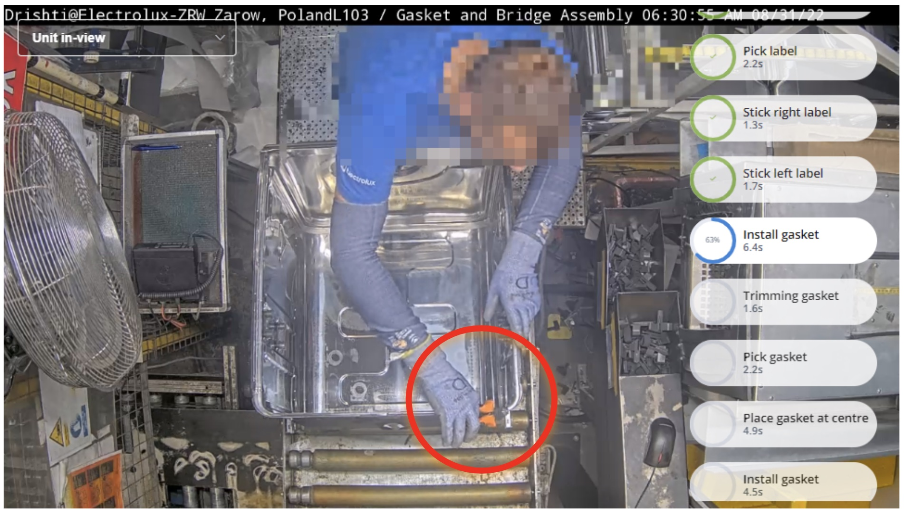
Drishti's AI tracking Standard Work actions in real-time at Electrolux's Zarow factory, Poland — each step timed and sequenced; a quality deviation flagged mid-cycle (red circle).
Drishti served a wide variety of customers — Toyota, DENSO, Electrolux, Hella, and AOSmith among them — ranging from lean manufacturing leaders to early-stage adopters, which required the Customer Success team to be highly specific in how they deployed and supported the platform for each.
For every customer, regardless of maturity, Drishti's Customer Success team was the bridge — installing cameras, deploying the platform, helping teams understand their own standard work through video analysis, and guiding them to a shared baseline before analytical value could be unlocked.
The value Drishti delivered mapped directly to the three pillars of OEE:
Productivity — From stopwatch estimates to ML-verified, video-evidenced cycle times
Quality — From invisible deviations to real-time, video-traceable defect detection
Performance — From impressionistic feedback to video-backed operator coaching
The ML engine could see everything. The interface showed almost none of it.
When I joined in November 2020, the platform's analytical power had no route to the people who needed it. I began with a structured heuristic evaluation to map exactly where it broke down.
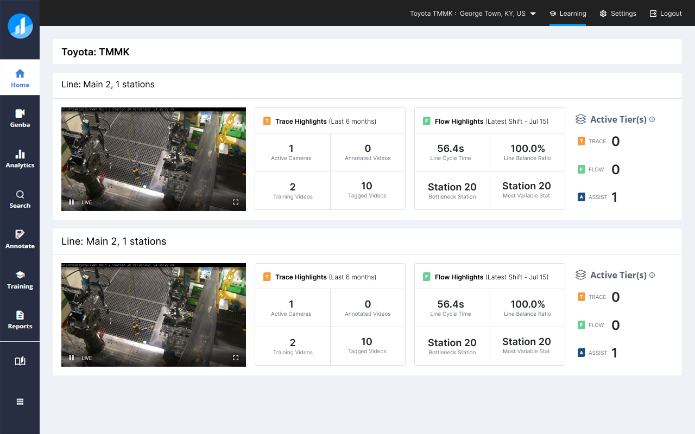
Static Home Screen — the home screen displayed information unchanged for 6+ months.
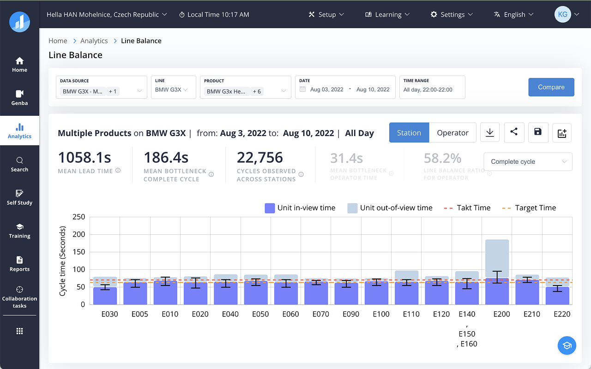
Visualisations were dense and statistical — suited for Industrial Engineers but inaccessible to Production Managers and Line Supervisors who needed at-a-glance operational summaries.
| # | Finding | Description |
|---|---|---|
| 1 | Action-pivoted Navigation | Global nav used action-based labels (Annotate, Train, Report) rather than entity-based labels (Factory, Line, Station). |
| 2 | Static Home Screen | The home screen displayed information unchanged for 6+ months. |
| 3 | Analytics for Statisticians Only | Visualisations were dense and statistical — suited for Industrial Engineers but inaccessible to Production Managers and Line Supervisors who needed at-a-glance operational summaries. |
| 4 | No Onboarding Guidance | Setting up a factory required inputs across dozens of fields with no wizard, no progress indicator, no nudge to completion. |
| 5 | Missing Workflows | Key floor activities — RCA, Kaizen, Standard Work audits — had no designated interface. Users relied on email, Excel sheets, and WhatsApp. |
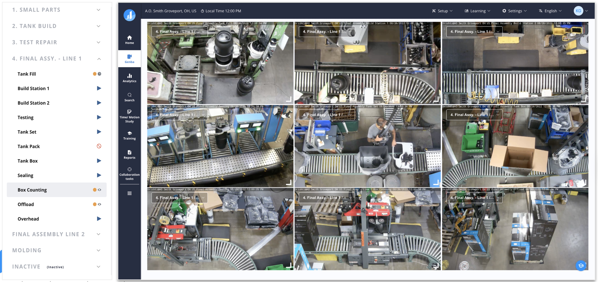
Genba view at AOSmith — the screen users spent 3× more time on than any other. Not because it was useful, but because it was the only place the data felt real.
A User-Connect session at AOSmith (August 2022) made the pattern unambiguous. Google Analytics data from Q1 2022: Genba — 34 hrs of portal use. Analytics — 11.5 hrs. A 3:1 ratio. The dominant click paths were Home → Genba → Analytics and Home → Analytics → Genba. Users weren't navigating — they were searching, manually, through raw footage.
"We can go back, at least narrow it down to, you know, 30 minutes or an hour window — we're not watching eight hours or anything like that."
— Production Supervisor, AOSmithRedesign goal: surface the right anomaly, at the right station, at the right timestamp — before anyone opens Genba.
The home screen does the narrowing, so a Line Manager arrives at the 90-second clip that matters, not the start of a shift.
No UX function. No design system. No shared visual language. Every feature had been built independently.
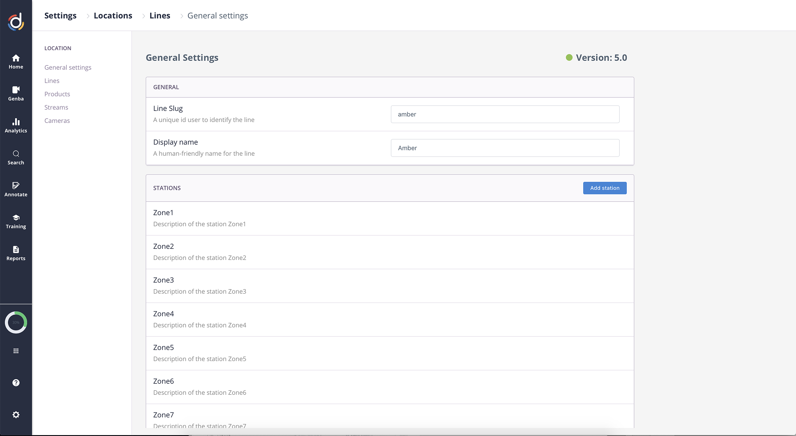
Old line setup — dozens of fields, no wizard, no progress indicator.
Features had been built independently — each with its own spacing, typography, and interaction patterns — leaving no visual or behavioural consistency across the product.
What I Did
Before any design work could start, I needed to understand how information actually flows across a manufacturing organisation on a given shift. From field visits and interviews, we mapped how data, decisions, and reports move across roles — from the operator at a station, up through the Line Supervisor and Industrial Engineer, to the Production Manager and Plant Head.
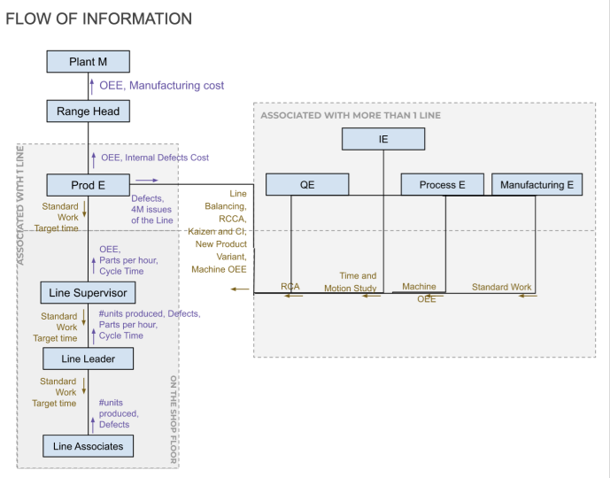
Flow of information across roles — Factory → Line → Station → Cycle
Mental model: Factory → Line → Station → Cycle.
The portal's navigation broke it entirely — so I knew navigation had to be the first thing I fixed.
Mapping the customer journey end-to-end surfaced two gaps: onboarding took 2+ months with no guidance or templates, and customers who weren't guided into core workflows in their first weeks rarely found them at all.
Finding: Drishti's value was real — but customers couldn't reach it without hand-holding that didn't scale.
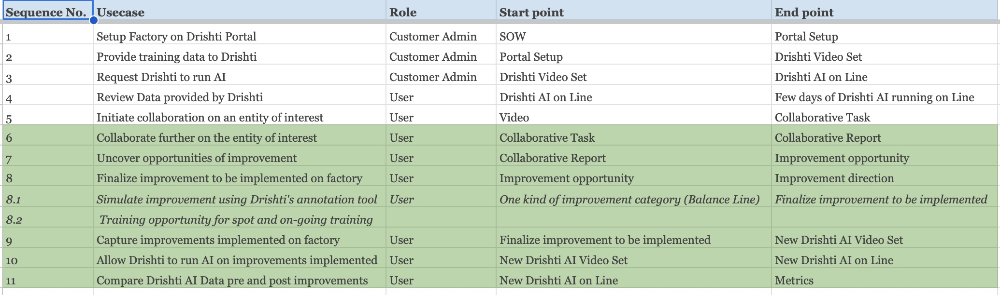
High-level customer journey — from awareness to ongoing operational use
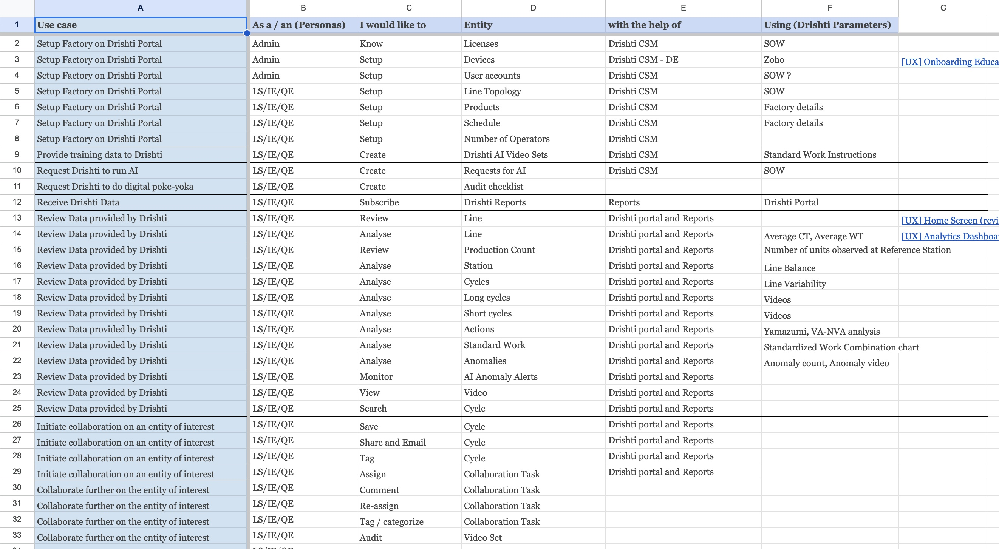
Detailed journey by role — exposing where onboarding burden fell and where workflows went undiscovered
Every role on the floor — from operator to plant head — mapped through structured interviews
I conducted 20+ interviews spanning operators, Line Supervisors, Industrial Engineers, Quality Engineers, Production Managers, and the Customer Success and Sales teams who worked with them daily.
Finding: Every role had different data needs, different urgency levels, and a completely different relationship with the platform — yet all were being served by the same interface.
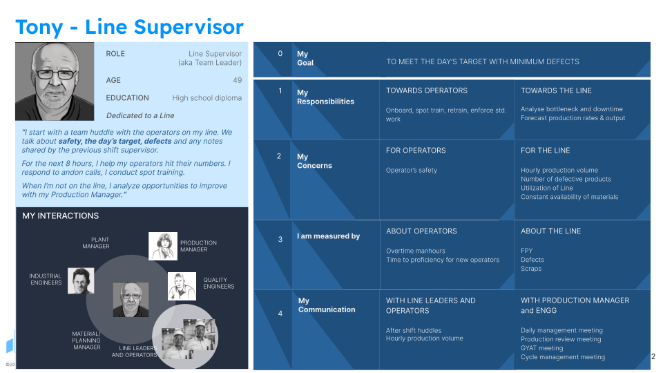
Four research-backed personas — evolved from two informal archetypes to a shared framework
Drishti operated with two informal archetypes — Tony (Line Supervisor) and Sidd (Industrial Engineer). I expanded this to four research-backed personas and socialised them across Marketing, Product, Sales, and Customer Success.
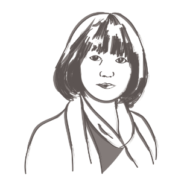
Goal: Meet production targets; OEE and OLE benchmarks across all lines
Pain: No holistic cross-line view; dependent on manual shift reports
Goal: Maintain daily line productivity; ensure operator safety
Pain: Data scattered across tools; needs real-time cycle and anomaly information
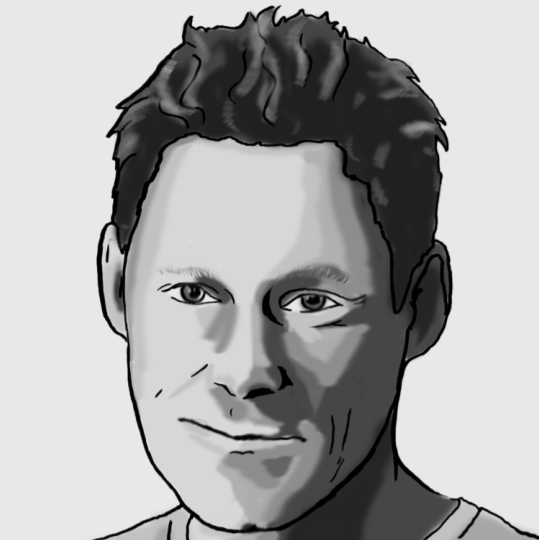
Goal: Identify bottlenecks; reduce cycle time variability
Pain: Statistical data without operational context; hard to identify LBR issues at a glance
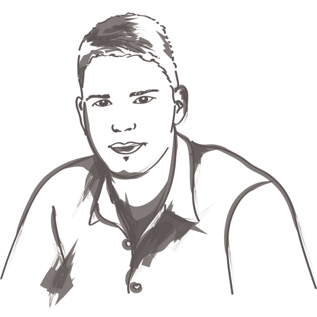
Goal: Audit quality, detect anomalies, initiate RCA
Pain: No structured workflow for audit cycles or critical check tracking inside the platform
Summary: All four personas shared one common need — an overview that made sense of the day's data at a glance, with important issues surfaced and alerted before they required active hunting.
Swim-lane trace — RCA, Kaizen, and Standard Work Audits mapped step-by-step across roles
In July 2022 I facilitated a day-long UX workshop in Bangalore — bringing together ML Engineering, Industrial Engineers, and Product Leads to collectively map RCA, Kaizen, and Standard Work workflows across roles. The output: swim-lane maps showing where Drishti was already solving, and precisely where it wasn't.
Finding: While many flows were already being solved for, gaps appeared in every scenario. In the Standard Work Audit, for example, Drishti could surface cycle videos alongside the relevant action in the standard work table — and support it with training content. Straightforward to build; invisible without the mapping.
Five months later, a December 2022 internal Hackathon brought engineers, IEs, and product leads together to generate new concepts from the ground up — surfacing 10+ persona-based workflow opportunities, including the alert and notification system that closed the anomaly loop for Line Managers.
What Changed
Before — navigation built around actions: Genba, Analytics, Annotate, Train, Report. No sense of where you were in the factory hierarchy.
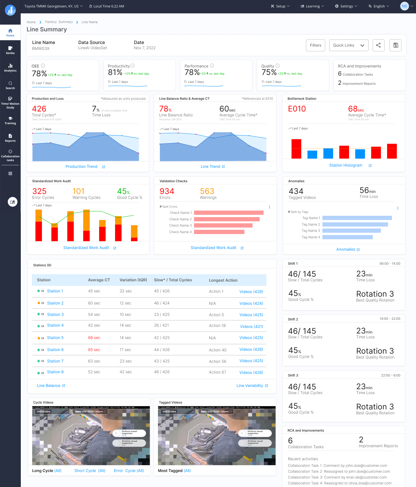
After — navigation built around entities: Factory, Line, Station. Your location in the hierarchy is always clear.
Paradigm shift: Actions (Genba · Annotate · Train · Report) → Entities (Factory · Line · Station).
Each entity level now has its own structured arc: Setup → Operation (Productivity · Performance · Quality) → Improvement — mirroring exactly how a manufacturing organisation runs a shift.
One screen, four personas — each finding what they need. Line Supervisor → Productivity. Industrial Engineer → Performance. Quality Engineer → Quality. Every number a combination of video evidence, direct ML stats, and platform inferences.
Design principle: Modular like Lego — the same components compose differently at each entity level, with clear CTAs connecting each summary view to detailed analytics, filtered video lists, RCAs, and line operations.
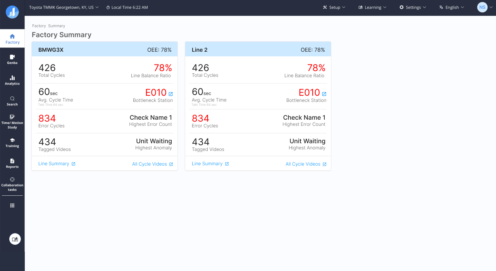
Factory Summary — cross-line OEE overview for Plant Manager
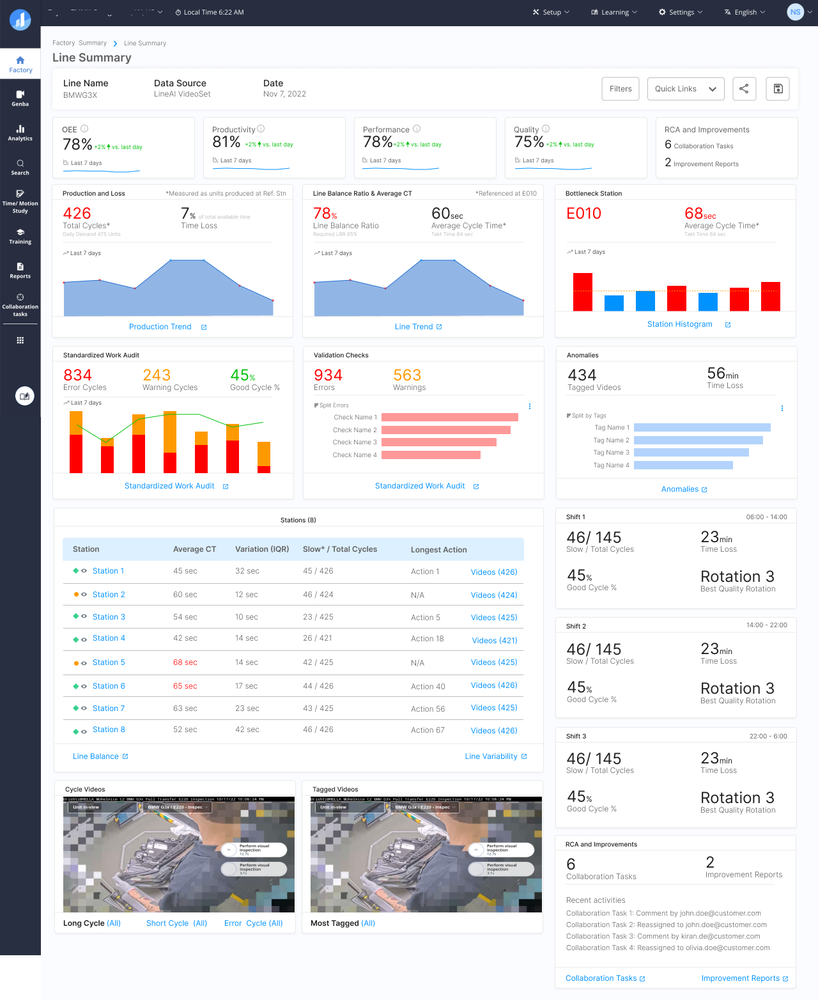
Line dashboard — Productivity, Performance, Quality for Line Manager
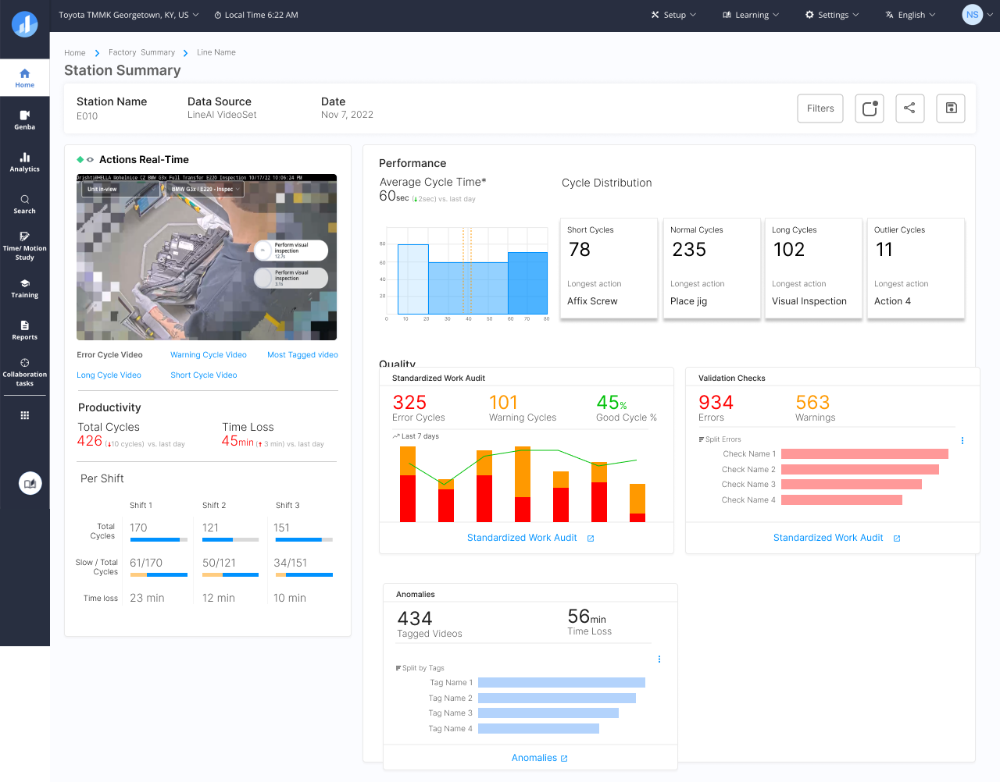
Station Summary — action-level metrics and quality audits for Industrial Engineer and Quality Engineer
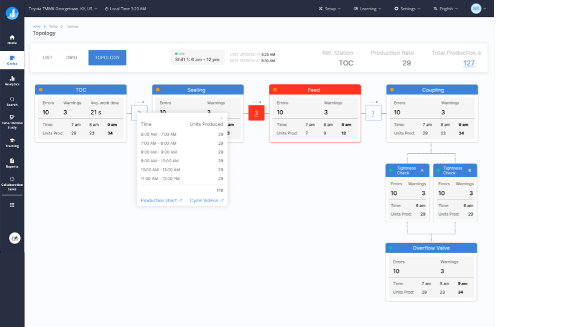
Another concept for the home screen with real-time operational data
Three hierarchy levels on a global left nav created compounding nesting. LTT won: global left nav, entity levels through top tabs — faster to scan, widescreen-efficient, and able to absorb Setup's many sub-sections without restructuring.
Decision: LTT over LLL and LLT — faster to scan, widescreen-efficient, and expandable as tab counts grew without changing the interaction model.
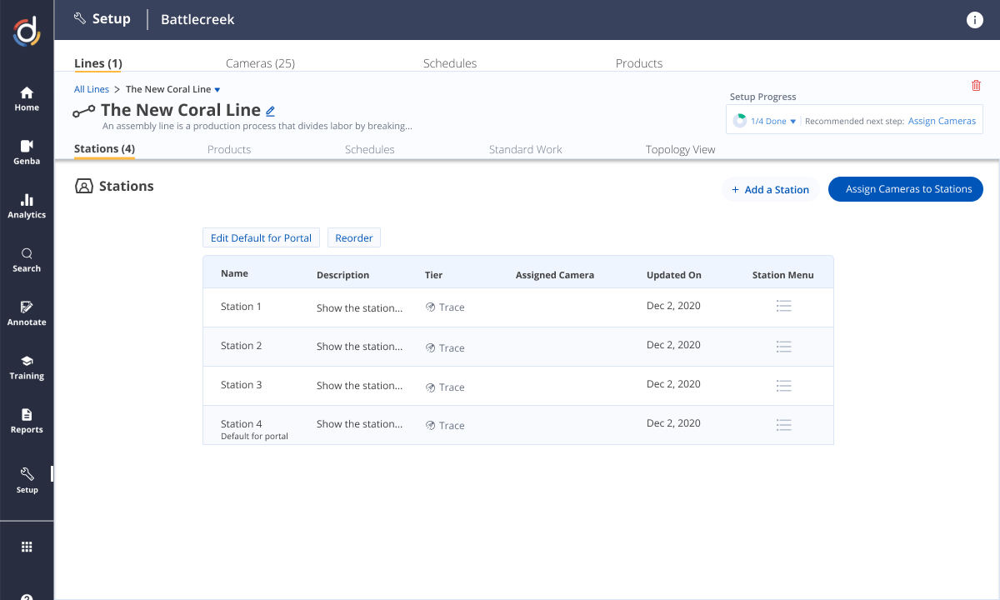
LTT — global nav left, entity levels (Factory → Line → Station) resolved through top tabs
Alongside LTT, I built Drishti's first design system: component library, colour system (Productivity — green, Performance — blue, Quality — amber/red), and spacing tokens. The same components composed at every entity level — no redesign needed to scale.
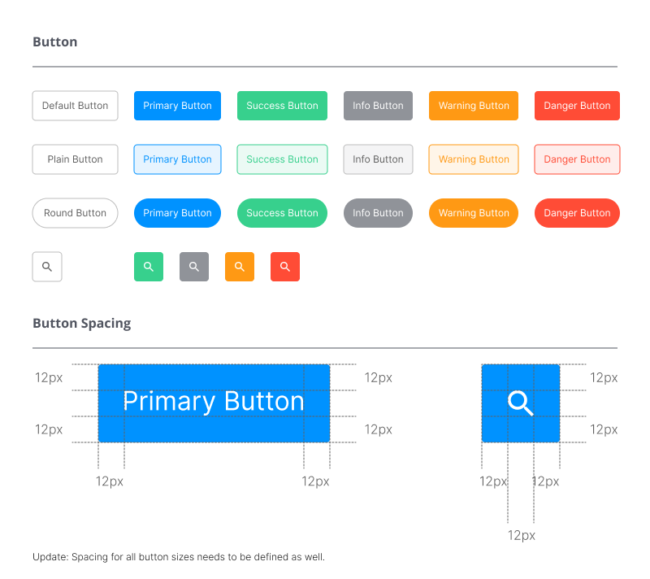
Component library — tables, cards, modals, filter bars, status indicators
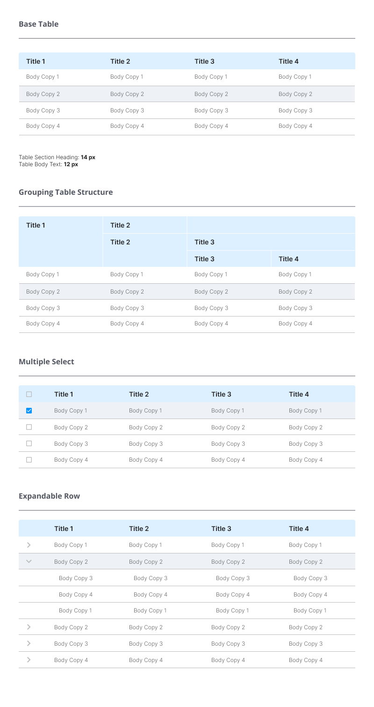
Colour system and typography tokens — consistent across all screens
The most-used person on the floor had no screen of their own.
The Line Operator — performing Standard Work cycles at the station — was entirely invisible to the platform. I designed a dedicated HMI for extreme floor constraints: bright ambient light, gloves-on operation, split-second attention.
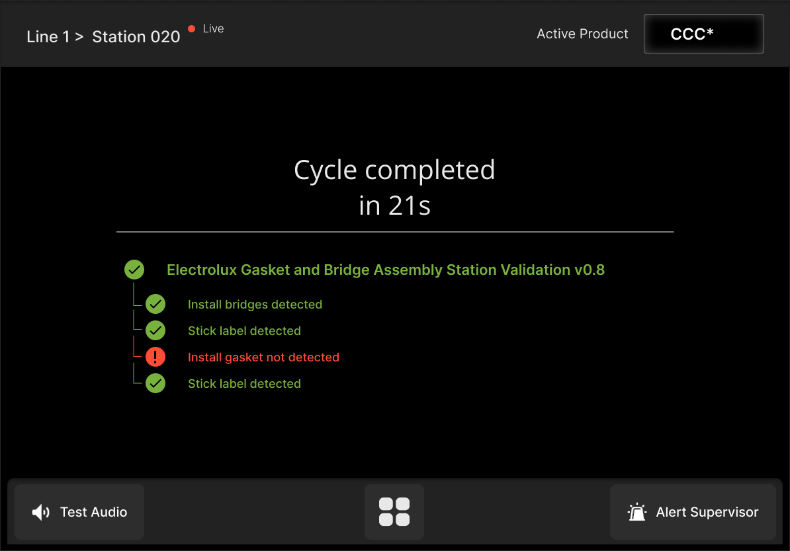
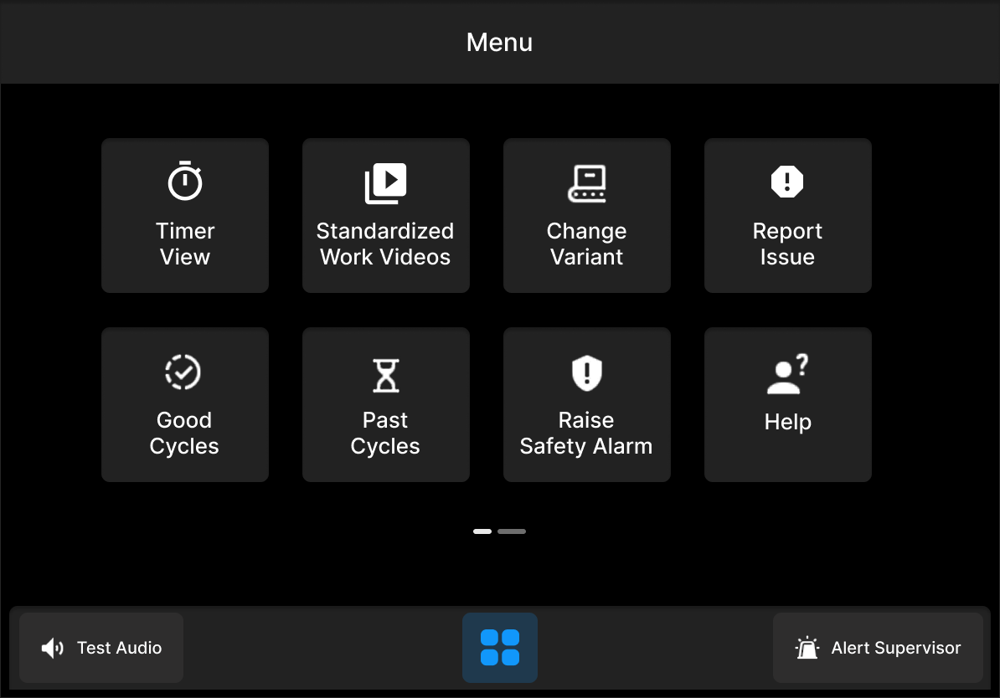
A dashboard only helps if someone is watching. Most of the time, no one is.
ML-detected events — long cycles, downtime, standard work deviations, consecutive DPY errors — now trigger categorised alerts routed to the right role, with a direct link to the cycle video.
For Electrolux, I designed a custom Validation Trend Dashboard — anomalies broken down by type in a Pareto view, matched to their quality team's maturity. The result: a 16% reduction in weekly defect ratio for roller leakage on their Roller Assembly station.
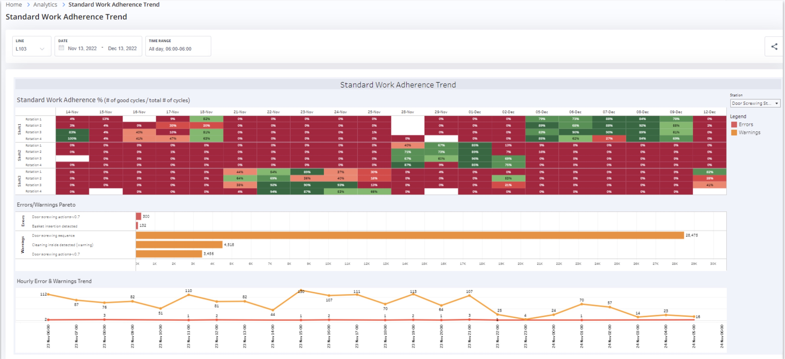
Outcomes
First structured user research in Drishti's history — 20 interviews, one workshop, 10+ workflow gaps surfaced.
Four personas. One shared language — across Product, Sales, CS, and Marketing.
Drishti's first design system — built once, scaled to every entity level without redesign.
The dashboards were deprioritised — but not shelved. They became the visual language of the design system and lived on in sales demos.
The RCA, Kaizen, SW Audit, and onboarding workflow designs are covered in detail in
Case Study B — Designing for Efficiency →